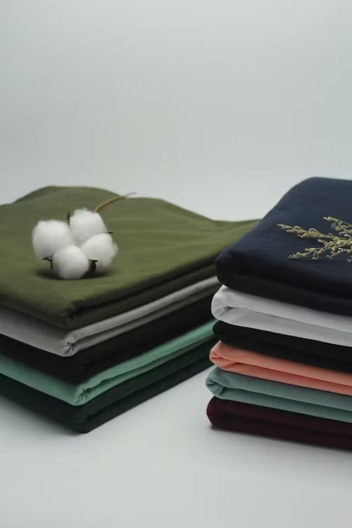
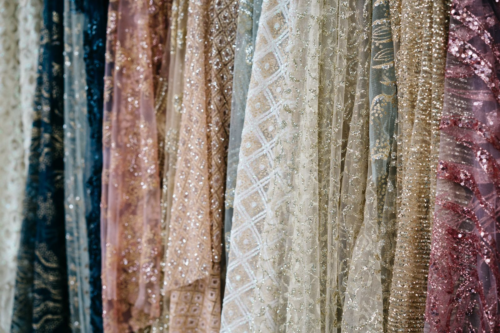
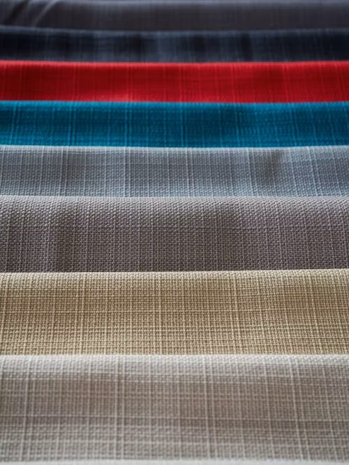
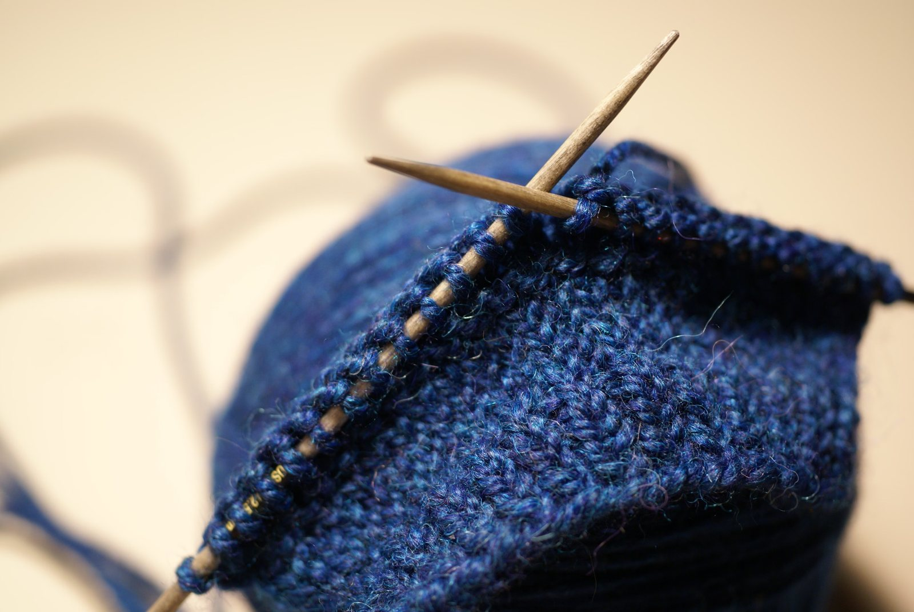
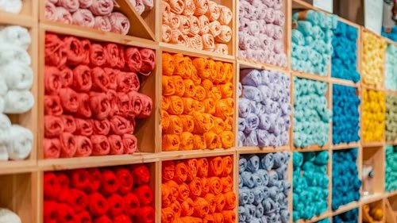
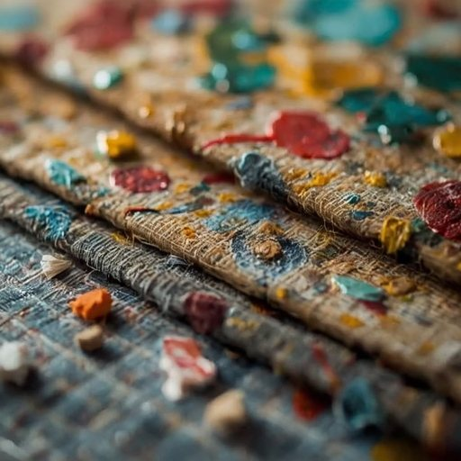
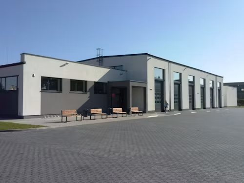
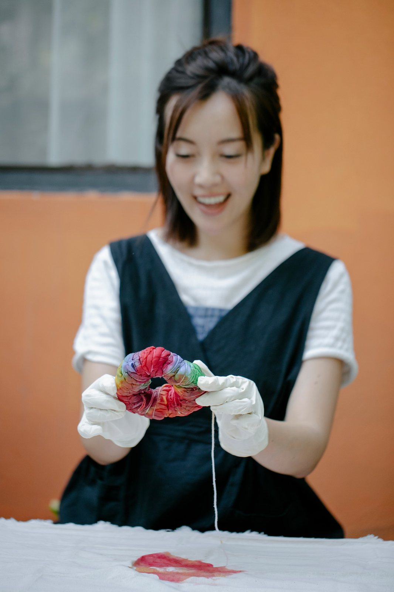

NaturalOrganic Cotton & Mulmul
Soft-hand mulmul, poplin and voile in undyed and plant-dyed shades for shirting, kurtas and baby wear.
- 90–180GSM
- 44–58"Width
- 300 mMin. order
Fabrics · Yarns · Embellished weaves
YashdaWearex designs and weaves cotton, lace, wool and jacquard fabrics for fashion labels, boutiques and home brands. Small batches, colour-matched to your shade card, dispatched in as little as three weeks.
Collections

NaturalSoft-hand mulmul, poplin and voile in undyed and plant-dyed shades for shirting, kurtas and baby wear.

EmbellishedNet, tulle and sequin lace with scalloped borders, made for occasion wear, bridal and dupattas.

WovenYarn-dyed checks, stripes and textured weaves with a crisp hand for blazers, trousers and upholstery.

Knit & yarnMerino and wool-blend knits, cable and rib structures, plus hand-knit panels for sweaters and accessories.

Knit & yarnOver 400 ready shades of cotton, wool and viscose yarn, cones or skeins, matched to your colour card.

EmbellishedBeadwork, zari and patchwork panels made by artisan teams, from single pieces to repeat runs.
Specifications are illustrative, for demonstration.
Why YashdaWearex
Cotton, linen, wool and silk blends sourced from audited growers and spinners.
Every shade is dyed in a closed-loop house, with colour-fastness reports on request.
Runs from 100 metres, so new labels can test a fabric before they commit.
Send a swatch or a shade code. Lab dips reach you within seven days.
A four-point inspection on every roll, with defect maps shared before dispatch.
Set hours, safe floors and artisan teams paid by the piece at fixed, published rates.
Process
Inside the atelier
Impact
We treat and reuse process water, switch to plant-based dyes wherever the shade allows, and send cut-offs to craft partners.
Figures are illustrative targets for demonstration.


Our story
YashdaWearex began as a family weaving shed with six handlooms. We still start every collection with a conversation about hand, drape and colour, then decide which machine, or which pair of hands, should make it.
Six handlooms and a dye pot.
Voile and mulmul reach Europe.
Closed-loop effluent plant opens.
Lab dips in seven days.
Questions
It depends on the fabric. Lace and sequin start at 100 metres, cotton and mulmul at 300 metres, yarn at 25 kg. Sampling is available below these quantities.
Swatches from stock ship in two to three days. Custom lab dips take about seven days, and new woven developments take three to four weeks.
Yes. Send a physical swatch or a shade code. We return lab dips for approval before any bulk dyeing starts.
We export to 18 countries and handle documentation, packing and freight booking. Delivery terms are agreed per order.
Mill visits run on weekdays by appointment. Ask through the enquiry form and we will arrange a walk-through with the production team.
Colour-fastness, shrinkage and GSM reports are available for every batch on request.
Contact
Tell us what you are making. We reply on WhatsApp with swatch options and prices.
Send us a swatch and get a lab dip in seven days.